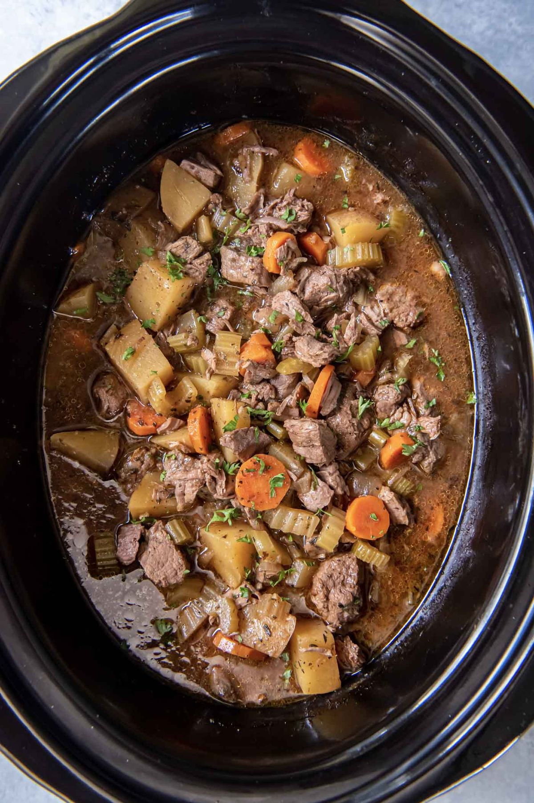

Slow Cooker Beef Stew

- Meal
- Dinner
- Serves
- 6 (with leftovers)
- Protein
- beef
- Cook
- slow cooker · 35 min active / 4.5–9 hr total · easy
- Make-ahead / leftovers
- yes / yes
- Mediterranean
- yes
- WW tier
- moderate
- Status
- Trying out (probation)
Kristine's classic beef stew — flour-dredged chuck browned in olive oil, then carrots, celery, potatoes, tomato paste, and herbs all day in the crock. Load it in the morning on a busy day; dinner is waiting.
Ingredients
- 3 Tbsp all-purpose flour
- 1 tsp kosher salt
- 1/2 tsp black pepper
- 2 lb boneless chuck roast, 1-inch cubes, trimmed (or stew meat)
- 2 Tbsp olive oil, divided
- 1 yellow onion, chopped
- 4 cloves garlic, minced
- 4 cups low-sodium beef broth, divided
- 3 ribs celery, chopped
- 4 medium carrots, 1/4-inch rounds
- 1.5 lb Yukon gold potatoes (about 4), 1-inch pieces
- 3 Tbsp tomato paste
- 1 Tbsp Worcestershire — anchovy-free only, or swap 2 tsp soy sauce (see Notes)
- 1 bay leaf
- 1 tsp dried Italian seasoning
- 1 tsp dried thyme
Method
- Shake the beef with the flour, salt, and pepper in a zip-top bag to coat.
- Heat 1 1/2 Tbsp oil in a large skillet over medium. Brown the beef in a single layer (two batches), ~4 minutes per side. Stir in any leftover flour and move the beef to a 5-quart or larger slow cooker.
- Add the remaining oil and the onion to the skillet; cook 3–4 minutes. Add garlic 30 seconds.
- Pour in 1/2 cup broth, scrape up the browned bits, and pour it all into the slow cooker.
- Add the rest of the broth, celery, carrots, potatoes, tomato paste, Worcestershire (or soy), bay leaf, Italian seasoning, and thyme. Stir gently.
- Cover and cook on low 7–9 hours or high 3 1/2–4 1/2 hours until tender. Discard the bay leaf, season, and serve.
Notes
- Kristine's recipe serves 8 with 2 lb beef — kept as-is: dinner for 6 plus a lunch.
- Fish-free swap: regular Worcestershire contains anchovies. Use an anchovy-free/vegan Worcestershire or sub soy sauce.
- Morning-of shortcut: brown the beef the night before, refrigerate it in the crock insert, and just add veg + broth in the morning.
- Red meat — counts toward the ≤2 cap. Not Slow Cooker Corned Beef (cured brisket, processed).
- Mediterranean ✓ on 3 of 4 (olive oil, lots of vegetables, potatoes); beef is the miss. moderate.